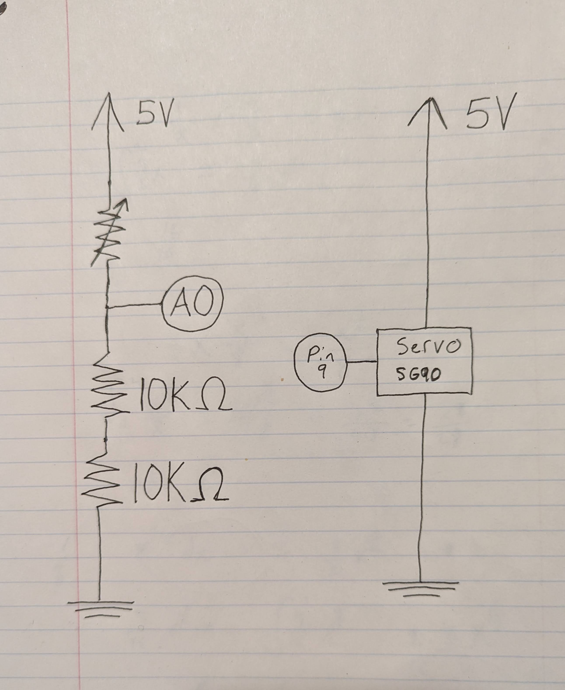
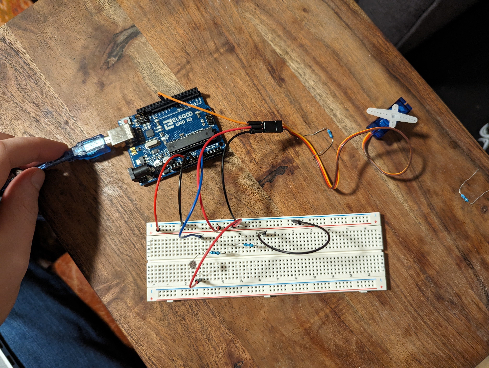
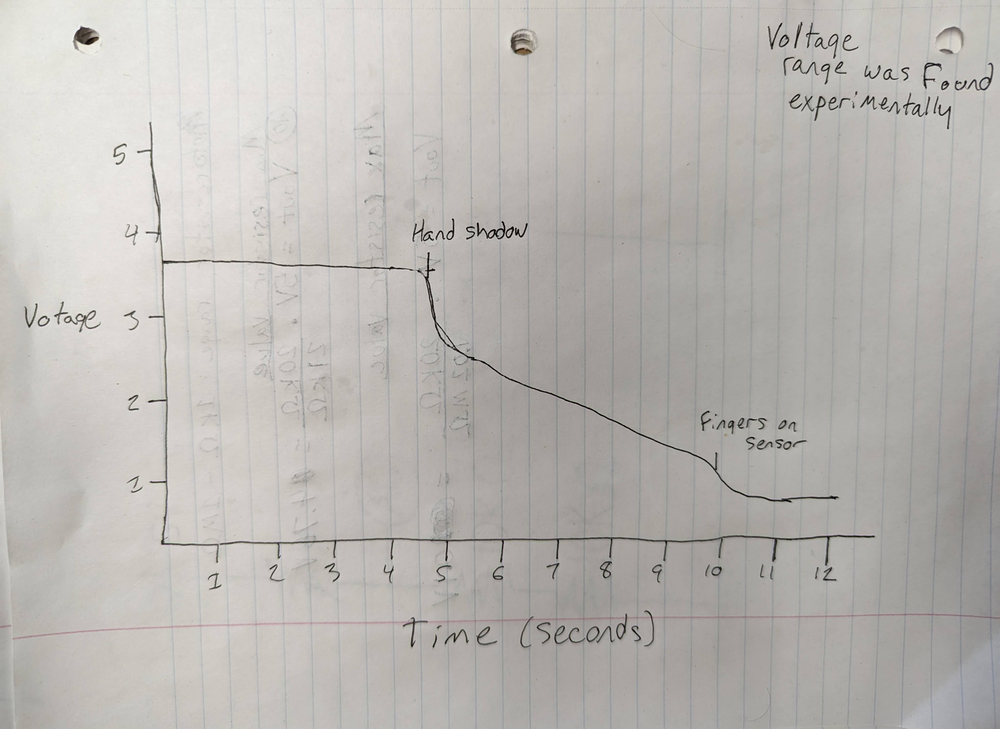

Sam's Assignment 3!

For assignment 3, I controled a servo motor with a photoresistor! First, you calibrate the sensor by making it very dark then very light. The servo will move slowly in bright light and
speed up as it gets darker. Imagined using this to keep and underwater sea gadget at an appropriate depth, since it would engage the motor as it sinks.
Code
#include // adding servo library
Servo servo; // assigning name to servo
const int analogInPin = A0; // Analog input pin that the potentiometer is attached to
const int analogOutPin = 9; // Analog output pin that the LED is attached to
int sensorValue = 0; // value read from the pot
int outputValue = 0; // value output to the PWM (analog out)
int sensorMin = 1023; // sets the sensor minimun to highest value before calibrating
int sensorMax = 0; // sets the sensor maximun to lowest value before calibrating
int posChange = 0; // defines the position change for each loop pass
void setup() {
// put your setup code here, to run once:
Serial.begin(9600); // sets bps rate
servo.attach(9); // connect servo to pin 9
servo.write(0); // move servo to position 0
while(millis()< 5000){ // calibration loop, runs for 5 seconds
if(analogRead(analogInPin) < sensorMin){ // opens when sensor reads below current minimum reading
sensorMin = analogRead(analogInPin); // sets new minimun to current value
}
if(analogRead(analogInPin) > sensorMax){ // opens when sensor reads above current maximun reading
sensorMax = analogRead(analogInPin); // set new maximun to current value
}
}
}
void loop() {
for(int i = 0; i < 181; i += posChange){ // loop moves servo from 0 to 180
sensorValue = constrain(analogRead(analogInPin), sensorMin, sensorMax); // reads the photoresistor, constrained to calibrated min/max
posChange = constrain(map(sensorValue, sensorMin, sensorMax, 25, 1), 1, 25); // sets the index change based on sensor value, constrained 1-25
servo.write(i); // moves motor position to index value
delay(15); // short pause
}
for(int i = 180; i > -1; i -= posChange){ // loop moves servo 180 to 0
sensorValue = constrain(analogRead(analogInPin), sensorMin, sensorMax); // reads the photoresistor, constrained to calibrated min/max
posChange = constrain(map(sensorValue, sensorMin, sensorMax, 25, 1),1,25); // sets the index change based on sensor value, constrained 1-25
servo.write(i); // moves motor position to index value
delay(15); //short pause
}
}
Schematic

Breadboard

Questions
1: In your voltage divider, can the variable resistor be either R1 or R2 or does it need to be one or the other? Justify your answer with example calculations.
I can be either, but the votage change will be the opposite direction for each. Increasing R1 lowers the voltage, increaing R2 raises the voltage. For example,
if R1 is 10K ohms and R2 is a variable resistor at 0 ohms, the voltage at the pin will be 0. If R2 is raised to 10k ohms the voltage at the pin will be raised to 2.5V.
2: Draw a graph where the x-axis is time and the y-axis is voltage. Plot the voltage at V-measure of your voltage divider of your shared gif.

3: AnalogWrite and analogRead are respectively 8-bit and 10-bit values. Imagine you had 10-bit PWM and a 16-bit analog-to-digital converter instead. How would this
change your map() code? Explain your answer.
10-bit has 1024 (2^10) values and 16-bit has 65536 (2^16) values. The function would therfore look like: map(PMWvalue, 0, 1023, 0, 65535). This would 10-bit to 16-bit linearly.